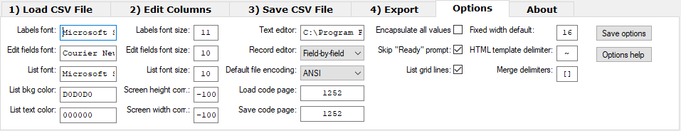

CSV Buddy helps you make your CSV files ready to be imported by a variety of software. Load files with all sort of field delimiters (comma, tad, semi-colon) and encapsulators (double/single-quotes or any other). Convert line breaks in data field (XL ready). Rename/reorder fields, merge fields in new columns, add/edit records, filter or search, search and replace, save with any delimiters and export to fixed-width, HTML templates or XML formats. Unicode ready. Freeware.
Quick JumpAbsolutely free to download and use, for personal or commercial use. You can make a donation if you wish.
CSV Buddy can be freely distributed over the internet in an unchanged form.
Some delimited test files are distributed with the program.
Even if the CSV file format is a widely accepted standard, it is still found in multiple flavors. In some implementations, fields are separated by comma. Others are delimited with tab, semi-colon or a variety of characters depending on the OS. Most CSV file records stand on one line. However, some programs export multi-line data with line breaks inside fields (try to load in Excel a CSV export from Outlook or Gmail contacts with multi-line notes text fields). Many programs will have a hard time importing these various variations of the CSV format.
The freeware CSV Buddy helps you make your CSV files ready to be imported by a variety of software. Load files with all sorts of field delimiters (auto-detection of comma, tab, semi-colon, etc.). Field containing delimiters or line breaks can be embedded in various encapsulators (double-quotes, single-quotes, pipes or any character). Get field names from the file's header (first line) or set your own column titles. Load data with line-breaks.
Rename, select or reorder fields. Merge fields into new columns. In a grid, add, edit or delete records. Sort them on alphabetical or numeric values (integer or float). Filter the list, search records with global or columnn search. Search and replace, confirm each replacement or replace all. Save all or selected rows to a new file using any delimiters, with header or not. Replace line breaks in data fields with a marker to make your file ready to load in software (like MS-Excel) that can only load single-line fields.
Export your data to fixed-width files with specific width for each field, truncating data or padding it with spaces. Export to HTML using your own template with markers to insert your data fields in the web page. Also export to XML standard format.
CSV Buddy can load files having up to 200 fields (columns) and cells with up to 8191 characters. With the 32-bits version, file loading is limited by available physical memory. Tests were successful with files over 100 MB. With the 64-bits version, there is no limitation to file size thanks to virtual RAM. However, loading and saving time will increase as files get huge (in the hundreds of megs). Read and save file with encodings ANSI (default), UTF-8, UTF-16, UTF-8-RAW (no BOM), UTF-16-RAW (no BOM) or CPnnnn (nnnn being a code page numeric identifier).
1) Load CSV file to a list view
- Select and preview the file to load
Supported file encodings: ANSI (default), UTF-8, UTF-16, UTF-8-RAW (no BOM), UTF-16-RAW (no BOM) or CPnnnn (set the load "nnnn" code page in the CSVBuddy.ini file).
- Get field names from the file header (first line of the file)
- Set the header of your choice to customize field names
- Use any single-character custom field delimiter (comma, tab, semi-colon, etc.)
- Use any single-character custom field encapsulator (double-quotes, single-quoted, etc.) to embed field containing a delimiters or line breaks
- Auto-detection of field delimiter (comma, tab, semi-colon, colon, pipe or tilde) and field encapsulator (double-quote, single-quote, tilde or pipe) from file's first line
- Load multi-line fields (do not consider a line break between double-quotes as the end of a record)
- Restore line breaks within fields by replacing a temporary character of your choice (like "¶", ASCII code 182) with line break
- Create merged fields as you load a file by adding merge specifications in the header of the file
- Import CSV files created by Excel containing equal signs before opening encapsulators to indicate data not to be interpreted as numeric data
- Load the file into a list allowing these features:
- Sort rows on any field by clicking on column headers
- Sorting type: alphabetical, numeric integer or numeric float, ascending or descending
- Click on a column header to perform a search, search and replace or a filtering on the content of this column.
- Search and replace, confirm each replacement or replace all
- Double-click on a row to edit a record in a dialog box (field names are uses as form labels)
- Right-click anywhere in the list view to select all rows, deselect all rows, reverse selection, add a new record, edit a record, delete selected rows, perform a global search or a global filtering
- Click the Create button on first tab or right-click in an empty list to create a new file from scratch
- Load a file from command-line parameter with automatically detected field delimiter
- Merge fields allowing, when loading a file, to create a new field based on the content of previous fields in each row (see "Merge fields" below)
2) Edit columns
- Rename fields by entering a delimited string with the new field names
- Order fields by entering a delimited string with the names of the fields in the desired order
- Select fields to keep in the list view by entering a delimited string with the names of these fields
- Merge existing fields into a new field
3) Save list view to CSV file
- Choose destination file name (default to original name + 1 or 2, etc.)
Supported save encodings: ANSI (default), UTF-8, UTF-16, UTF-8-RAW (no BOM), UTF-16-RAW (no BOM) or CPnnnn (set the save "nnnn" code page in the CSVBuddy.ini file).
- Check the content of the destination file if it exists
- Overwrite or append data if destination file exists
- Set any single-character as field delimiter in the destination file
- Set any single-character as field encapsulator in the destination file
- Save the file with or without a CSV header (first line of the file with field names)
- Save multi-line fields (embedded with the encapsulator character)
- Convert multi-line fields to single-line by replacing line breaks within fields with a replacement character of your choice (like ")
- Save rows in the order they appear in the list view
- Save all rows or only selected rows
4) Export
- Export to fixed-with file
- Choose fixed-width for each field
- Truncate data or pad with space
- Export to HTML using an HTML template
- Export to XML
- Export to other format using a custom row template
Throughout CSV Buddy, you'll find help capsules available by clicking the ? button. You will find below a compilation of help messages for each function in their logical sequence of use. Read the whole thing now for a quick overview of CSV Buddy or, if you prefer, read it as you need it in each of the four tabs of the CSV Buddy.
Hit "Select" to choose the CSV file to load.
Click on the various Help (?) buttons to learn about the options offered by CSV Buddy. When setting are ready, hit "Load" to import the file.
Note that CSV Buddy can load CSV files with up to 200 fields. Also, although up to 8,191 characters of text can be stored in each cell, only the first 260 characters are displayed.
To create a new file, click the "Set header" radio button, enter field names in the "Custom Header" zone and right-click in the list zone to select the "Create new file..." menu.
Most of the time, the first line of a CSV file contains the CSV header, a list of field names separated by a field delimiter. If your file contains a CSV Header, select the radio button "Get CSV Header". When you select a file (using the "Select" button), the "CSV Header" zone displays the first line of the selected file.
Note that invisible characters used as delimiters (for example Tab) are displayed with an escape character. For example, Tabs are shown as "`t".
If the file does not contain a CSV header or if you want to create a new file, select the radio button "Set CSV Header" and enter in the "CSV Header" zone the field names for each column of data in the file, seperated by the field delimiter.
If the first line of the CSV file contains the list of field names, click "Get header from CSV file".
If the file does not contain a CSV header or if you want to create a new file, click "Set CSV header" and enter the list of field names separated by the "Field delimiter".
Each field in the CSV header and in data rows of the file must be separated by a field delimiter. This is often comma ( , ), semicolon ( ; ) or Tab.
CSV Buddy will detect the delimiter if one of these characters is found in the first line of the file: tab, semi-colon, comma, colon, pipe or tilde. If this is not the correct delimiter, enter any single character or one of these replacement letters for invisible characters:
t Tab (HT)
n Linefeed (LF)
r Carriage return (CR)
f Form feed (FF)
Space can also be used as delimiter. Just enter a space in the text zone.
Tip: Use the "Preview" button to find what is the field delimiter in the selected file.
When data fields in a CSV file contain characters used as delimiter or end-of-line, they must be enclosed in a field encapsulator. This encapsulator is often double-quotes ( "..." ) or single quotes ( '...' ). For example, if comma is used as field delimiter in a CSV file, the data field "Smith, John" must be encapsulated because it contains a comma.
If a field contains the character used as encapsulator, this character must be doubled. For example, the data "John "Junior" Smith" must be stated as "John ""Junior"" Smith".
CSV Buddy will detect the encapsulator if one of these characters is found in the first line of the file: double-quote, single-quote, tilde or pipe. If this is not the correct encapsulator, enter any single character.
Tip: Use the "Preview" button to find what is the field encapsulator in the selected file.
Most CSV files do not contain line breaks inside text field. But some do. For example, you can find multi-lines "Notes" fields in Google or Outlook contacts exported files.
If text fields in your CSV file contain line breaks, select this checkbox to turn this option ON. If not, keep it OFF since this will improve loading performance.
If you turn Multi-line ON, you have the additional option to choose a character (or string) that will be converted to line-breaks if found in the CSV data fields.
Set the file encoding used to load the file. Available encoding options are:
- ANSI: default encoding
- UTF-8: Unicode 8-bit
- UTF-16: Unicode 16-bit with little endian byte order
- UTF-8-RAW: Unicode 8-bit without byte order mark (no BOM)
- UTF-16-RAW: Unicode 16-bit without byte order mark (no BOM)
- CPnnnn: custom codepage ("nnnn" being the numeric code page value)
If file encoding is not specified (if you leave encoding at "Detect") when loading a file, it is loaded as UTF-8 or UTF-16 if these formats are detected in file header or as ANSI for all other formats (and displayed as such in load and save encoding encoding lists). UTF-8-RAW and UTF-16-RAW formats cannot be auto-detected and must be selected in encoding list to load files in these formats. If required, set custom codepage values in the "Options" tab.
You can create merged fields using the application (see tab "2) Edit Columns tab"). But you can also create them as you load a CSV file, reusing the content of previous fields in each row (requires v2.1.9.3 or more recent). Set configurable merge opening and closing delimiters in the "Options" tab (by default "[ ]"). Choose characters that won't be used in other fields name.
Insert merged field specs in the CSV file header in two parts: 1) fields to merge and format, 2) new field name "[[fields and format][name]]".
1) [fields and format]: format the new field reusing existing fields by enclosing their name between delimiters, example [Client: [LastName], [FirstName]]
2) [name]: name of the new field
[[[Address Line] in [City]][MyField]]]
- The first [] pair delimits the whole merge specs.
- The second level of pairs delimits the two sections: [[fields and format][name]]
- Inside [fields and format], a third level of pairs delimits the fields merged.
For example: inserting merge specs in the header "LastName,FirstName,City,[[Client: [FirstName] [LastName] ([City])][Name and city]]" would add to your data a new field named "Name and city" with content "Lalonde,Jean,Montreal,Client: Jean Lalonde (Montreal)" or "Presley,Elvis,Memphis,Client: Elvis Presley (Memphis)".
Requirements:
- fields reused in merge specs must appear in columns before the merged specs;
- if the merge specs include field delimiters, this whole field must be enclosed with field encapsulators.
Your CSV file is loaded.
You can sort rows by clicking on column headers. Choose sorting type: alphabetical, numeric integer or numeric float, ascending or descending.
Clicking on a column header also allows you to search this column in all or selected rows, and to search and replace with or without confirmation.
Double-click on a row to edit a record. Right-click anywhere in the list to select all rows, deselect all rows, reverse selection, edit a record, add a new record or delete selected rows. If you right-click in an empty list, you will be offered to create a new file.
Right-click in the list to perform a global search or a global filtering. Click on a column header to perform a search or a filtering on the content of this column.
You can use the tab "2) Edit Columns" to edit field names, change fields order, select fields to keep or create a new field merging existing columns.
When ready, go to the "3) Save CSV File" tab to save all or selected rows in a new CSV file or to the "4) Export" tab to export your data to fixed-width, HTML or XML format.
To change field names (column headers), enter a new name for each field, in the order they actually appear in the list, separated by the field delimiter ( usually comma ) and click "Rename".
If you enter less names than the number of fields (or no field name at all), "C" + numbers are used as field names for remaining columns.
Field names including the separator character ( comma ) must be enclosed by the encapsulator character ( usually double-quotes ).
To save the file, click on the tab "3) Save CSV File".
To remove fields (columns) from the list, enter the name of fields you want to keep, in the order they actually appear in the list. Each field must be separated by the field delimiter ( ~3~ ).
Click "Select" to process fields. To save the file, click on the last tab "3) Save CSV File".
To change the order of fields (columns) in the list, enter the field names in the new order you want to apply, separated by the field delimiter ( usually comma ) and click "Order".
If you enter less field names than in the original header, fields not included in the new order are removed from the list. However, if you only want to remove fields from the list (without changing the order), the "Select" button gives better performance on large files.
To save the file, click on the last tab "3) Save CSV File".
To create a new field by merging other fields, enter the merged field names enclosed by the delimiters [ ] (see "Options" tab) and the surrounding characters in the "Merge fields" text zone (example "Full name: [FirstName] [LastName]"); enter the name of the new field in "New field name:". The new field is added after the last column.
Click "Merge" to process the merge fields. To save the file, click on the last tab "3) Save CSV File".
Enter the name of the destination CSV file (the current program's directory is used if an absolute path isn't specified) or hit "Select" to choose the CSV destination file. If the destination file exists, data can overwrite the existing file or be appended to it. When other options are OK, hit "Save" to save all or selected rows to the CSV file.
Note that all rows are saved by default. But if one or more rows are selected, only these rows are saved. You can select one row (using Click), a series of adjacent rows (using Shift-Click) or non contiguous rows (using Ctrl-Click or Shift-Ctrl-Click). You can also right-click in the list to select or deselect all rows, or to reverse the current row selection.
Note that fields are saved in the order they appear in the list and that rows are saved according to the current sorting order (click on a column name to sort rows).

To save the field names as the first line of the CSV file, select "Save with header".
If you select "Save without header", the first line of the file will contain the data of the first row of the list.
Each field in the CSV header and in data rows of the file must be separated by a field delimiter. Enter the field delimiter character to use in the destination file.
It can be comma ( , ), semicolon ( ; ), Tab or any single character.
Use the letters on the left as replacement for the following invisible characters:
t Tab (HT)
n Linefeed (LF)
r Carriage return (CR)
f Form feed (FF)
Data fields in a CSV file containing the character used as field delimiter or an end-of-line must be enclosed in a field encapsulator. Enter the field encapsulator character to use in the destination file.
The encapsulator is often double-quotes ( "..." ) or single quotes ( '...' ). In the example "Smith, John", the data field containing a comma will be encapsulated because comma is also the field delimiter.
If a field contains the character used as encapsulator, this encapsulator will be doubled. For example, the data "John "Junior" Smith" will be entered as "John ""Junior"" Smith".
If a field contains line break, you can decide if this line break is saved as is or if it is replaced with a character (or a sequence of characters) in order to keep the field on a single line. This can be useful if, later, you want to open this file in a software that do not support multi-line fields (e.g. MS Excel).
If you select "Save multi-line", line breaks are saved unchanged.
If you select "Save single-line", enter the replacement sequence for line breaks inside data fields in the "End-of-line replacement:" zone. By default, the replacement character is "¶" (ASCII code 182).
Set the file encoding used to save the file. Available encoding options are:
- ANSI: default encoding
- UTF-8: Unicode 8-bit
- UTF-16: Unicode 16-bit with little endian byte order
- UTF-8-RAW: Unicode 8-bit without byte order mark (no BOM)
- UTF-16-RAW: Unicode 16-bit without byte order mark (no BOM)
- CPnnnn: custom codepage ("nnnn" being the numeric code page value)
If file encoding is not specified (if you leave encoding at "Detect") when loading a file, it is loaded as UTF-8 or UTF-16 if these formats are detected in file header or as ANSI for all other formats (and displayed as such in load and save encoding encoding lists). UTF-8-RAW and UTF-16-RAW formats cannot be auto-detected and must be selected in encoding list to load files in these formats. If required, set custom codepage values in the "Options" tab.
Encoding selected in the "3) Save CSV File" tab is also used in the "4) Export" tab.

Enter the name of the destination file of the export (the current program's directory is used if an absolute path isn't specified) or hit "Select" to choose the destination file. When other options are OK, hit "Export" to export all or selected rows to the destination file.
Note that all rows are exported by default. But if one or more rows are selected, only these rows are exported. You can select one row (using Click), a series of adjacent rows (using Shift-Click) or non contiguous rows (using Ctrl-Click or Shift-Ctrl-Click). You can also right-click in the list to select or deselect all rows, or to reverse the current row selection.
Rows are exported according to the current sorting order (click on a column name to sort rows).
Choose one of these export formats:
» Fixed-width: To export to a text file where each record appears on a separate line, and the width of each field remains consistent across records. Field names can be optionally inserted on the first line. Field names and data fields shorter than their width are padded with trailing spaces. Field names and data fields longer than their width are truncated at their maximal width. Fields are exported in the order they appear in the list. If the destination file exists, data can overwrite the existing file or be appended to it.
» HTML: To build an HTML file based on a template file specifying header and footer templates, and a row template where variable names are replaced with the content of each record in the list. If the destination file exists, it is overwritten.
» XML: To build an XML file from the content of the list. You must ensure that field names and field data comply with the rules of XML syntax. Fields are exported in the order they appear in the list. If the destination file exists, it is overwritten.
» Express: To build a text file based on a row template where variable names are replaced with the content of each record in the list. If the destination file exists, it is overwritten.
Select the export format. An additional "<format> Export Help" button will provide more instructions about the selected format.
Click the "Export" button to export data and the "Check" button to see the result in the destination file.
Transfer the selected fields from the list to a fixed-width file.
In the "Fields width:", enter each field name to include in the file, followed by the width of this field. Field names and width values are separated by the field delimiter ( usually comma ) specified in the tab "3) Save CSV File". Initially, the "Fields width:" zone includes all fields with a default width of 16 characters. To change the default width, click the "Change default width" button.
Field names and data fields shorter than their width are padded with trailing spaces. Field names and data fields longer than their width are truncated at their maximal width.
Field names can be optionnaly included on the first line of the file according to the selected option "Save with header" or "Save without header" on the tab "3) Save CSV File".
A fixed-width file should not include end-of-line within data. If it does and if a value is entered in the "End-of-line replacement:" on the tab "3) Save CSV File" (click "Save single-line" to see this option), end-of-line in multi-line fields are replaced by a character or string of your choice. This string is included in the fixed-width character count.
Click the "Export" button to export data and the "Check" button to see the result in the destination file.
Build an HTML file based on a template file specifying header and footer templates, and a row template where variable names are replaced with the content of each record in the list.
Enter the template file name in the "HTML template:" or click "Select HTML template" to choose it. The template is divided in three sections: the header template (from the start of the file to the start of the row template), the row template (delimited by the markups ~ROWS~ and ~/ROWS~) and the footer template (from the end of the row template to the end of the file).
The row template is repeated in the output file for each record in the list. Field names encapsulated by the ~ character (ASCII code 164) are replaced by the matching data in each record. Also, ~ROWNUMBER~ is replaced by the current row number.
In the header and footer, the following variables are replaced by parts of the destination file name:
~FILENAME~ file name without its path, but including its extension
~DIR~ drive letter or share name, if present, and directory of the file, final backslash excluded
~EXTENSION~ file's extension, dot excluded
~NAMENOEXT~ file name without its path, dot and extension
~DRIVE~ drive letter or server name, if present
This simple example, where each record has two fields named "Field1" and "Field2", shows the use of the various markups and variables:
<HEAD>
<TITLE>~NAMENOEXT~</TITLE>
</HEAD>
<BODY>
<H1>~FILENAME~</H1>
<TABLE>
<TR>
<TH>Row #</TH><TH>Field One</TH><TH>Field Two</TH>
</TR>
~ROWS~
<TR>
<TD>~ROWNUMBER~</TD><TD>~Field1~</TD><TD>~Field2~</TD>
</TR>
~/ROWS~
</TABLE>
Source: ~DIR~\~FILENAME~
</BODY>
Click the "Export" button to export data and the "Check" button to see the resulting HTML file in your default browser.
Build an XML file from the content of the list. You must ensure that field names and field data comply with the rules of XML syntax.
This simple example, where each record has two fields named "Field1" and "Field2", shows the XML output format:
<?xml version='1.0'?>
<XMLExport>
<Record>
<Field1>Value Row 1 Col 1</Field1>
<Field2>Value Row 1 Col 2</Field1>
</Record>
<Record>
<Field1>Value Row 2 Col 1</Field1>
<Field2>Value Row 2 Col 2</Field1>
</Record>
</XMLExport>
Click the "Export" button to export data and the "Check" button to see the result in the destination file.
Build a text file based on a row template where variable names are replaced with the content of each record in the list.
In the "Express template:" zone, enter the template for each row of data in the list. In this template, field names encapsulated by the character ~ (tilde) are replaced by the matching data in each record. Also, ~ROWNUMBER~ is replaced by the current row number.
Additionaly, these special characters can be inserted in the template:
`t replaced by Tab (HT)
`n replaced by Linefeed (LF)
`r replaced by Carriage return (CR)
`f replaced by Form feed (FF)
The "Express template:" zone is initialized with all fields encapsulated by the character ~ (tilde) and delimited with spaces.
Click the "Export" button to export data and the "Check" button to see the result in the destination file.

These settings can be changed in "Options" tab or by editing the CSVBuddy.ini file located in the application's folder (label between parenthesis are the variable names to use in the ini file under the [global] section):
Restart the applications after saving your changes to the .ini file.
The following keyboard shortcuts can be used in CSV Buddy:
To load a file from the command-line, add the CSV file name as the first command parameter, for example c:\MyProgs\CSVBuddy.exe file2load.csv. The file will be loaded with the automatically detected field delimiter and field encapsulator.
C:\>"C:\Apps\CSV Buddy\CSVBuddyMessenger.exe" "Set|strFileToLoad|C:\myfile.csv"
| Tab | Control type | Control name | Message Example | Notes |
|---|---|---|---|---|
| 1 | Edit | strFileToLoad | Set|strFileToLoad|C:\myfile.csv | |
| 1 | Button | Exec|ButtonSelectFileToLoad | Interactive use only | |
| 1 | Edit | strFileHeader | Set|strFileHeader|ID,Name,City | |
| 1 | Button | Exec|ButtonPreviewFile | Interactive use only | |
| 1 | Radio | radGetHeader | Set|radGetHeader|1 | |
| 1 | Radio | radSetHeader | Set|radSetHeader|1 | |
| 1 | Edit | strFieldDelimiter1 | Set|strFieldDelimiter1|; | |
| 1 | Edit | strFieldEncapsulator1 | Set|strFieldEncapsulator1|* | |
| 1 | Checkbox | blnMultiline1 | Set|blnMultiline1|1 | Send message "Exec|ChangedMultiline1" to see strEndoflineReplacement1 |
| 1 | Edit | strEndoflineReplacement1 | Set|strEndoflineReplacement1|¶ | |
| 1 | DropDownList | strFileEncoding1 | Choose|strFileEncoding1|UTF-8 | |
| 1 | Button | Exec|ButtonLoadFile | Will promt the user if CSV Buddy contains data | |
| 1 | Button | Exec|ButtonLoadFileAdd | Will add the current content without prompting the user | |
| 1 | Button | Exec|ButtonLoadFileReplace | Will replace the current content without prompting the user | |
| 1 | Button | Exec|ButtonCreateNewFile | Interactive use only | |
| 2 | Edit | strRename | Set|strRename|ID,Full Name,City | |
| 2 | Button | Exec|ButtonSetRename | ||
| 2 | Button | Exec|ButtonUndoRename | ||
| 2 | Edit | strOrder | Set|strOrder|Name,City,ID | |
| 2 | Button | Exec|ButtonSetOrder | ||
| 2 | Button | Exec|btnUndoOrder | ||
| 2 | Edit | strSelect | Set|strSelect|Name,City | |
| 2 | Button | Exec|ButtonSetSelect | ||
| 2 | Button | Exec|ButtonUndoSelect | ||
| 2 | Edit | strMerge | Set|strMerge|[Last Name], [First Name] | |
| 2 | Edit | strMergeNewName | Set|strMergeNewName|Full Name | |
| 2 | Button | Exec|ButtonSetMerge | ||
| 2 | Button | Exec|btnUndoMerge | ||
| 3 | Edit | strFileToSave | Set|strFileToSave|C:\myfile-changed.csv | |
| 3 | Button | Exec|ButtonSelectFileToSave | Interactive use only | |
| 3 | Edit | strFieldDelimiter3 | Set|strFieldDelimiter3|; | |
| 3 | Edit | strFieldEncapsulator3 | Set|strFieldEncapsulator3|* | |
| 3 | Radio | radSaveWithHeader | Set|radSaveWithHeader|1 | |
| 3 | Radio | radSaveNoHeader | Set|radSaveNoHeader|1 | |
| 3 | Radio | radSaveMultiline | Set|radSaveMultiline|1 | |
| 3 | Radio | radSaveSingleline | Set|radSaveSingleline|1 | |
| 3 | Edit | strEndoflineReplacement3 | Set|strEndoflineReplacement3|¶ | |
| 3 | DropDownList | strFileEncoding3 | Choose|strFileEncoding1|UTF-8 | Values: "ANSI", "UTF-8", "UTF-16", "UTF-8-RAW", "UTF-16-RAW" or "CPnnn" Encoding selected in the "3) Save CSV File" tab is also used in the "4) Export" tab. |
| 3 | Button | Exec|ButtonSaveFile | Will prompt the user if file exists | |
| 3 | Button | Exec|ButtonSaveFileOverwrite | Will overwrite the existing file without prompting the user | |
| 3 | Button | Exec|ButtonCheckFile | Interactive use only | |
| 4 | Edit | strFileToExport | Set|strFileToExport|C:\myexport.txt | |
| 4 | Button | Exec|ButtonSelectFileToExport | Interactive use only | |
| 4 | Radio | radFixed | Set|radFixed|1 | |
| 4 | Radio | radHTML | Set|radHTML|1 | |
| 4 | Radio | radXML | Set|radXML|1 | |
| 4 | Radio | radExpress | Set|radExpress|1 | |
| 4 | Button | Exec|ButtonExportFile | ||
| 4 | Edit | strMultiPurpose | Set|strMultiPurpose|String | |
| 4 | Button | Exec|ButtonMultiPurpose | Interactive use only, change default width, select HTML template | |
| 4 | Button | Exec|ButtonCheckExportFile | Interactive use only | |
| 5 | Edit | strFontNameLabels | Set|strFontNameLabels|Microsoft Sans Serif | |
| 5 | Edit | strFontNameEdit | Set|strFontNameEdit|Courier New | |
| 5 | Edit | strFontNameList | Set|strFontNameList|Microsoft Sans Serif | |
| 5 | Edit | strListBackgroundColor | Set|strListBackgroundColor|D0D0D0 | |
| 5 | Edit | strListTextColor | Set|strListTextColor|000000 | |
| 5 | Edit | strFontSizeLabels | Set|strFontSizeLabels|12 | |
| 5 | Edit | strFontSizeEdit | Set|strFontSizeEdit|11 | |
| 5 | Edit | strFontSizeList | Set|strFontSizeList|10 | |
| 5 | Edit | intSreenHeightCorrection | Set|intSreenHeightCorrection|-100 | |
| 5 | Edit | intSreenWidthCorrection | Set|intSreenWidthCorrection|-100 | |
| 5 | Edit | strTextEditorExe | Set|strTextEditorExe|notepad.exe | |
| 5 | DropDownList | strRecordEditor | Choose|drpRecordEditor|Full screen | Values: "Full screen" or "Field-by-field" |
| 5 | DropDownList | strDefaultEileEncoding | Choose|drpDefaultEileEncoding|UTF-8 | Values: "ANSI", "UTF-8", "UTF-16", "UTF-8-RAW", "UTF-16-RAW" or "CPnnn" |
| 5 | Edit | strCodePageLoad | Set|strCodePageLoad|1242 | |
| 5 | Edit | strCodePageSave | Set|strCodePageSave|1242 | |
| 5 | Checkbox | blnAlwaysEncapsulate | Set|blnAlwaysEncapsulate|1 | |
| 5 | Checkbox | blnSkipHelpReadyToEdit | Set|blnSkipHelpReadyToEdit|1 | |
| 5 | Checkbox | blnListGrid | Set|blnListGrid|1 | |
| 5 | Edit | intDefaultWidth | Set|intDefaultWidth|16 | |
| 5 | Edit | strTemplateDelimiter | Set|strTemplateDelimiter|~ | |
| 5 | Edit | strMergeDelimiters | Set|strMergeDelimiters|[] | |
| 5 | Button | Exec|ButtonSaveOptions | ||
| 6 | Button | Exec|ButtonCheck4Update | ||
| 6 | Button | Exec|ButtonDonate |
These commands can also be used in your script or sent as single message (except if tagued "script only").
| Command | Example | Notes |
|---|---|---|
| Tab | Tab|1 | Switch the user interface to the specified tab; other values are: "2", "3", "4", "5" and "6" |
| Window | Window|Maximize | Other values are: "Minimize" and "Restore" |
| Debug | Debug|1 | Pauses before executing each command; other value is: "0" |
| Exit | Exit | Exit the current script file (script only) |
| Sleep | Sleep|n | Pause the script execution for "n" milliseconds |
C:\>"C:\Apps\CSV Buddy\CSVBuddyMessenger.exe" "c:\myfiles\myscript.txt"
The file myscript.txt must contain one message per line. In this example, a file comma delimited is loaded in CSV Buddy and saved with semi-colon delimiters:
Tab|1
Set|strFileToLoad|c:\myfiles\countrylist.csv
Set|strFieldDelimiter1|,
Exec|ButtonLoadFile
Tab|3
Set|strFileToSave|o:\temp\countrylist-semicolon.csv
Set|strFieldDelimiter3|;
Exec|ButtonSaveFileOverwrite
Licensed under the Apache License, Version 2.0 (the "License");
you may not use this file except in compliance with the License. You may obtain a copy of the License at
http://www.apache.org/licenses/LICENSE-2.0
Unless required by applicable law or agreed to in writing, software distributed under the License is distributed on an "AS IS" BASIS, WITHOUT WARRANTIES OR CONDITIONS OF ANY KIND, either express or implied. See the License for the specific language governing permissions and limitations under the License.
Jean Lalonde, ahk@jeanlalonde.ca